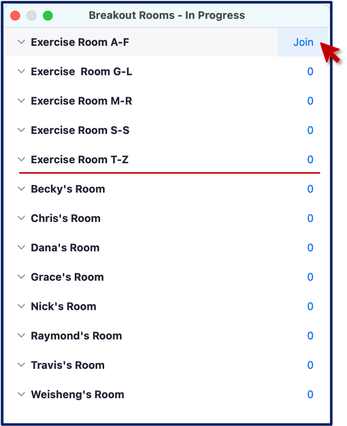

Computational Foundations Workshop
UM Bioinformatics Core Workshop Team
Welcome
About the Bioinformatics Core
- The University of Michigan Bioinformatics Core is a team of analysts that help researchers design, analyze, and interpret high-throughput genomics experiments.
- Last year we helped about 60 researchers design and execute about 100 projects including gene expression, epigenetic, variant identification, functional enrichment and many other kinds of analyses.
- We provide letters of support for grant proposals.
- We are creating a series of bioinformatics-focused workshops.
- UM BRCF Bioinformatics Core
About the workshop team
 |
 |
 |
|
|---|---|---|---|
| Chris | Marci | Raymond | Travis |
 |
|||
| Jay | Kelly | Nick | Sarah |
(Helpers joining Tuesday/Wednesday)
 |
 |
||
|---|---|---|---|
| Dana | Matthew | Marisa | Sai |
| Weisheng |
Workshop sponsors
Sponsors
University of Michigan Library
Our mission is to support, enhance, and collaborate in the instructional, research, and service activities of faculty, students, and staff, and contribute to the common good by collecting, organizing, preserving, communicating, sharing, and creating the record of human knowledge.
Biomedical Research Core Facilities
Biomedical Research Core Facilities (BRCF) helps researchers economically take advantage of the latest technology and collaborate with top experts in the field. Established in 1986, the BRCF was formed to offer centralized access to research services and equipment.
Code of Conduct
Be kind to others. Do not insult or put down others. Behave professionally. Remember that harassment and sexist, racist, or exclusionary jokes are not appropriate for the workshop.
All communication should be appropriate for a professional audience including people of many different backgrounds. Sexual language and imagery is not appropriate.
The Bioinformatics Core is dedicated to providing a harassment-free community for everyone, regardless of gender, sexual orientation, gender identity and expression, disability, physical appearance, body size, race, or religion. We do not tolerate harassment of participants in any form.
Thank you for helping make this a welcoming, friendly community for all.
If you have questions about the CoC please reach out to the hosts during the workshop, or email us at bioinformatics-workshops@umich.edu.
To report a CoC incident/concern, please email Chris Gates (Bioinformatics Core, Managing Director) at cgates@umich.edu or contact the University of Michigan Office of Institutional Equity at institutional.equity@umich.edu.
Using Zoom and Slack
- We will be recording this session. Recordings will be available to participants following the workshop.
Zoom controls are at the bottom of the Zoom window:

To minimize distractions, we encourage participants to keep their audio muted (unless actively asking a question).
To maximize engagement, we encourage participants to keep their video on.
Slack works better than Zoom’s Chat function so avoid Zoom Chat for now.
You can enable transcription subtitles for your view.
We will be using Breakout Rooms occasionally for ad-hoc 1-1 helper support. We will review this in detail together in a few minutes.
Zoom’s “non-verbal controls” are a useful way to interact
- Depending on your version of Zoom you can access these either
- in the Reactions button on you main Zoom window
- at the bottom of the Participant pane
- Depending on your version of Zoom you can access these either
Zoom non verbals
- Raise Hand to request clarification or ask a question. (Same an in-person workshop.)
- Instructors will use Green check and Red
X to poll the group at checkpoints along the way.
Exercise: Use Zoom non-verbals
- Everyone use Zoom to raise your hand.

Exercise: Using Zoom Breakout Rooms
Take a moment to briefly introduce yourself (name, dept/lab, area of study) in a breakout room.
- Zoom: Click Breakout Rooms
- Find the room corresponding to the first letter of your first name
- Hover over the number to the right and click Join.
- When you have completed introductions, you can leave the breakout room to rejoin the main room.

- Slack can be used to communicate to the group or to individuals and has a few features/behaviors that we prefer over Zoom’s Chat functionality.

Posting messages to Slack
- Slack messages will be posted to the 22022-02-computational-foundations-workshop channel. Click on the channel in the left pane (1) to select this channel.
- You can type in the message field (2); click send (3) to post your message to everyone.
- Helpers will respond in a Slack thread (or pose the question to the instructor)
- You can respond in a message thread by hovering over a message to trigger the message menu and clicking the speech bubble (4).
Exercise: Responding in Slack thread
What is one thing you hope to learn today or tomorrow?
Review of Key communication patterns
| “I have an urgent question” | |
Post a question |
| “I have a general question” | Post a question | |
| “I’m stuck / I need a hand” | Post a note | |
| Instructor check-in |  -or-
-or-  |
|
| Instructor Slack question | Respond in Slack thread |
Exercise: Group checkpoint
- Using Zoom, give me a green-check if you feel like
you understand communication patterns or red-X if you
need clarification.
Arranging your screens
It is important that you can see:
- Zoom (instructor’s shared screen + reactions)
- Your terminal/command window (days 1-2) or R/Studio (days 2-3)
- Slack
- Lesson plan web page

Workshop goals and topics
This workshop provides a foundation for researchers to make compute-intensive research projects easier, simpler, and more reproducible.
By the end of the workshop, attendees will be able to
- Understand how to use a range of basic Bash commands including techniques to view and manipulate files from the command line.
- Combine Bash commands together to create custom scripts.
- Understand basics of importing data into R and ways to clean/manipulate data
- Visualize data as plots
Please let us know if there is anything we can do to improve the workshop experience.
Our purpose is not to be exhaustive, there is a lot that we cannot cover in the allotted time, and we don’t expect anyone to be an expert at the end of the workshop. But we hope you will have a familiarity with key concepts, tools, and techniques.
Any questions?
This workshop content is licensed under a Creative Commons Attribution 4 License.
Large sections of this workshop content have been adapted and extended from materials created by Software Carpentry. These are open access materials distributed under the terms of the Creative Commons Attribution license (CC BY 4.0), which permits unrestricted use, distribution, and reproduction in any medium, provided the original author and source are credited.
The workshop Code of Conduct has been adapted the NumFocus Code of Conduct which itself draws from from numerous sources, including the Geek Feminism wiki, created by the Ada Initiative and other volunteers, which is under a Creative Commons Zero license, the Contributor Covenant version 1.2.0, the Bokeh Code of Conduct, the SciPy Code of Conduct, the Carpentries Code of Conduct, and the NeurIPS Code of Conduct.